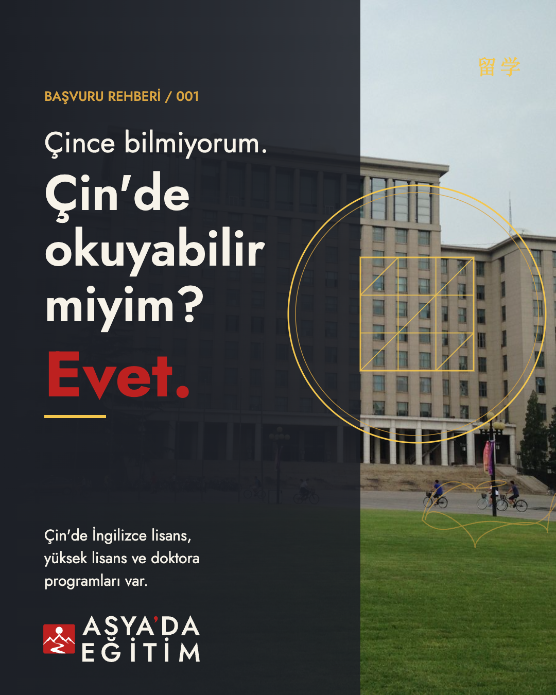
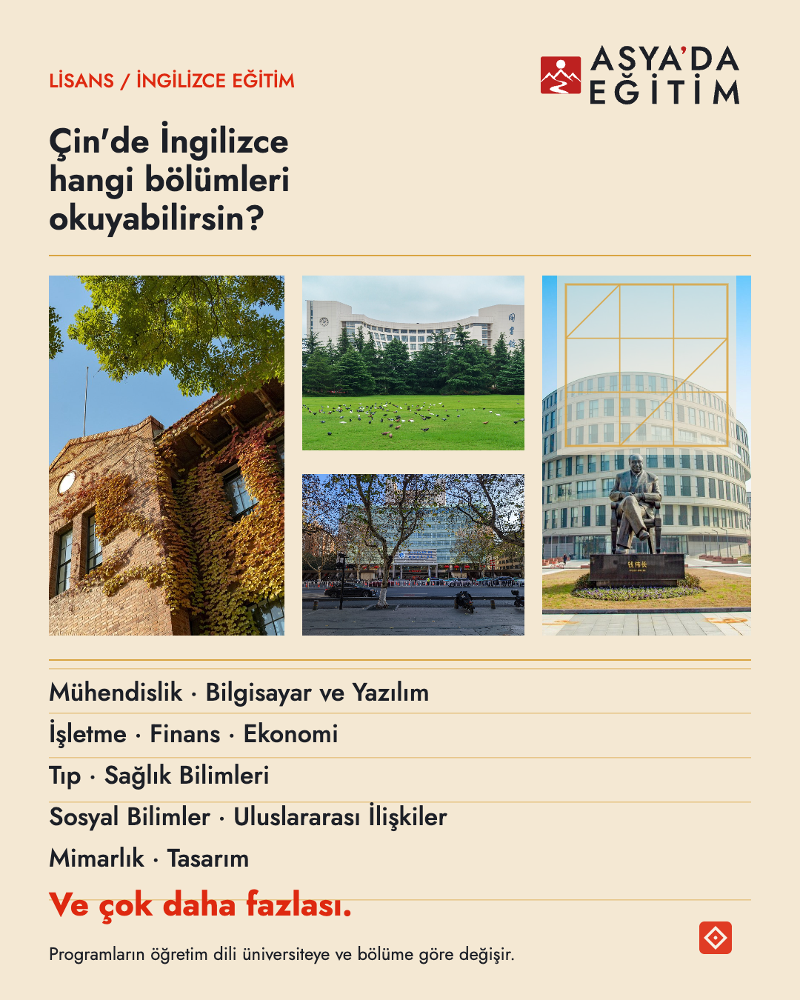
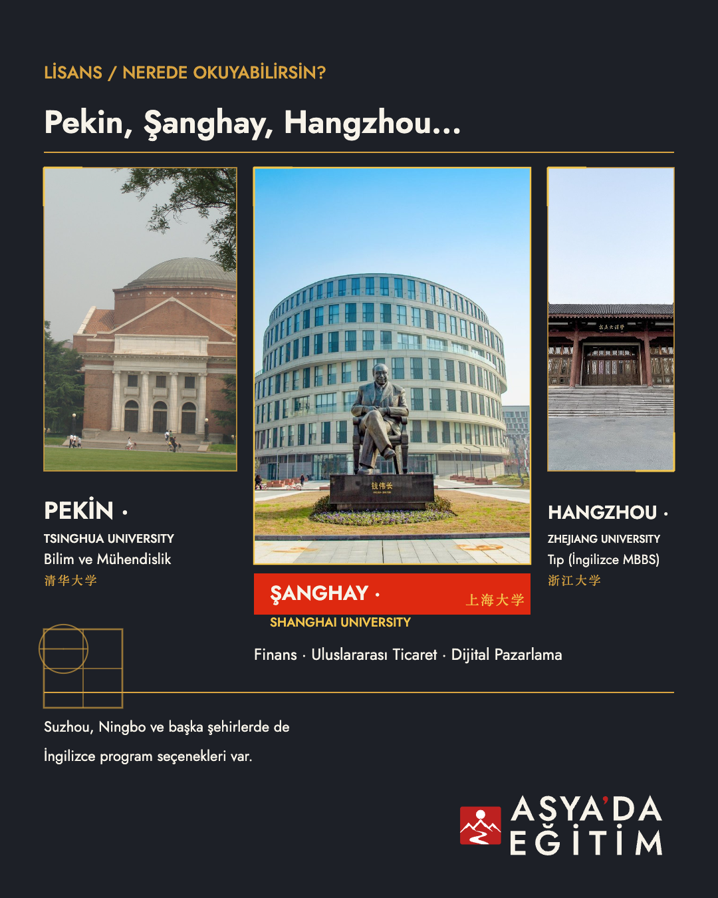
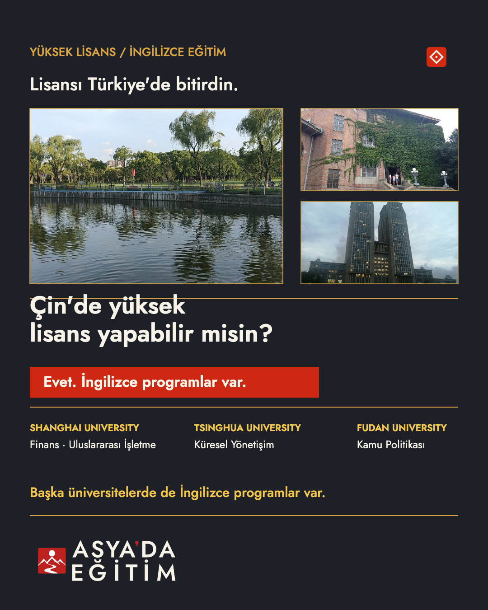
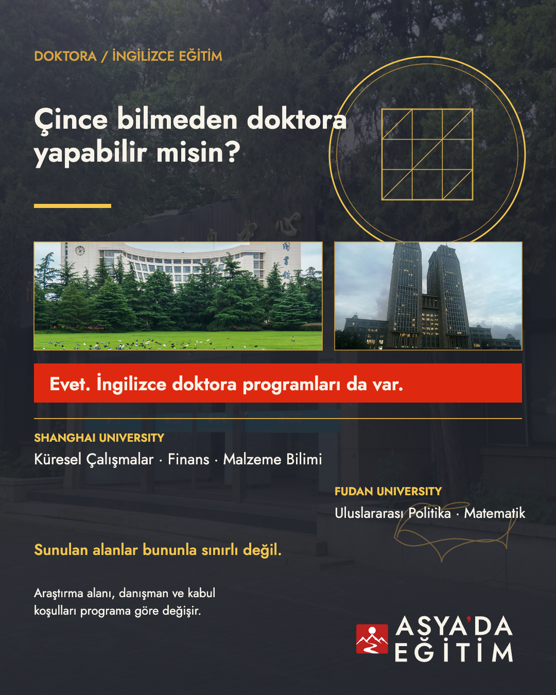
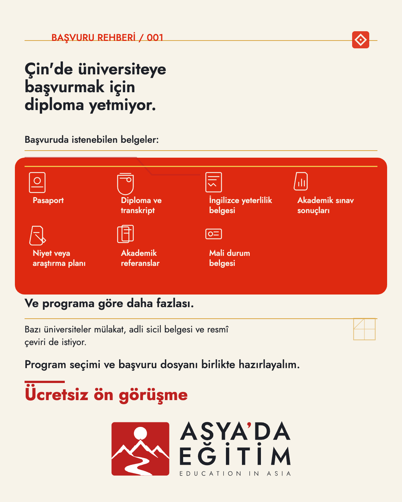
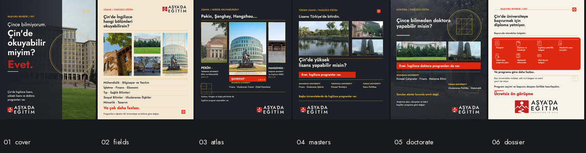
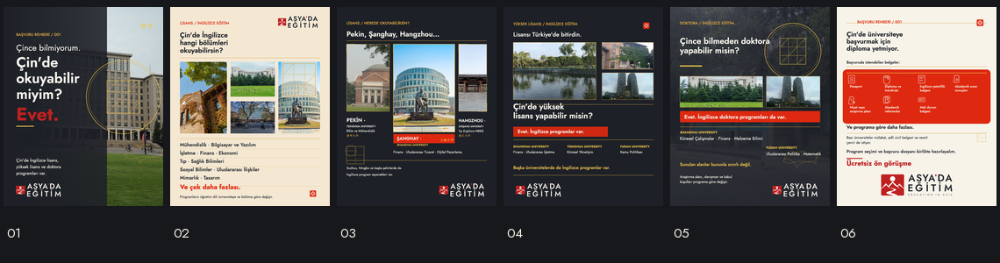
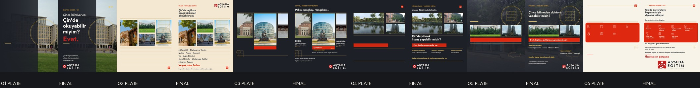

ASYA'DA EĞİTİM · BRAND STUDIO
ASYA'DA EĞİTİM · BRAND STUDIO
BAŞVURU REHBERİ / 001 · ÇİNCE BİLMEDEN ÇİN'DE OKUYABİLİR MİYİM?
Altı slayt.
Bir soru, altı yanıt.
Çince bilmeden Çin'de lisans, yüksek lisans ve doktora yapılıp yapılamayacağını anlatan altı karelik Instagram carousel'ı. Çin görsel dili — ay kapısı geometrisi, pencere kafesi, auspicus bulut konturu ve mühür esinli işaretler — çağdaş editoryal tipografi ve gerçek kampüs fotoğrafçılığıyla birleştirildi.
Metin kilitlidir ve birebir korunmuştur. Kanonik V-01 mühürü ve onaylı lockup ailesi hiçbir slaytta yeniden çizilmedi, yeniden dizilmedi veya yeniden renklendirilmedi; tamamı bağlantılı SVG olarak kompozit edildi. Tüm geometri ölçümleri Chromium'da gerçek metin sınırları üzerinden yapıldı.
SLAYTLAR
Altı çerçeve






TEMA SAYFASI
Altı slayt yan yana

MOBİL ÖNİZLEME
375 × 469 akış önizlemesi
Gerçek 1080×1350 PNG'lerden üretilmiştir. Mobilde okunabilirlik ayrıca ölçülmüş ve tema sayfası olarak incelenmiştir.

EDİTÖRYAL TABAN → FİNAL
Tipografi ve lockup kompoziti
Solda metin ve logo içermeyen sanat yönetimi tabanı; sağda final kare. Fark, tamamen Jost metni ve kanonik lockup'tur; hiçbir fotoğraf veya motif yeniden üretilmemiştir.

RENK SİSTEMİ
Marka ve kampanya renkleri
Marka kırmızısı
Marka mürekkebi
Marka kâğıdı
Çin kırmızısı
İmparatorluk altını
Parlak altın
Sıcak fildişi
İki kırmızı hiçbir slaytta komşu alanlarda kullanılmaz: marka kırmızısı hero cevap kelimesinde ve CTA alt çizgisinde, Çin kırmızısı band, düzlem ve klasör formunda. Altın yalnızca ince süs çizgisi olarak değil, büyük vurgu alanlarında da görünür.
- TİPOGRAFİ
- Jost (SIL OFL 1.1), hepsi gömülü. Türkçe metin 400/500/600/700. Çince ikincil işaretler Songti SC alt kümesi (17 karakter).
- ÇİN AYGITLARI
- Ay kapısı geometrisi · pencere kafesi · xiangyun bulut konturu · geometrik mühür esinli işaret · mimari kırpma çerçeveleri
- KANONİK LOCKUP
- Altı slaytta da bağlantılı SVG olarak.
01/03/04/05:
D-04/dark(kâğıt harfler, koyu zemin) 340 px. 02:D-04/light(mürekkep harfler, fildişi zemin) 300 px. 06: birincil yatayH-02/light, 528 × 198 px — İngilizce satır dahil tam kapanış imzası. Oran korunmuş, minimum boyutun üzerinde, çerçevede. Wordmark kontrastı 13,0:1–14,7:1 olarak ölçüldü; varyant/zemin eşleşmesi otomatik denetlenir. - GÖRSEL ÜRETİM
- 0 çağrı. Fotoğraflar Wikimedia Commons; Çin motifleri yerel deterministik SVG geometrisi.
FOTOĞRAF KREDİLERİ
Lisanslar ve kaynaklar
| Üniversite / yer | Fotoğrafçı | Lisans | Kullanım |
|---|---|---|---|
| Tsinghua Üniversitesi — ana bina | そらみみ (Soramimi) | CC BY-SA 4.0 | 01 |
| Tsinghua Üniversitesi — Büyük Oditoryum | Dquai | CC BY-SA 4.0 | 03 |
| Tsinghua Üniversitesi — Eski Kütüphane | そらみみ (Soramimi) | CC BY-SA 4.0 | 04 |
| Tsinghua Üniversitesi — Elektrik Müh. Binası | 清華匿名學生 | CC0 1.0 | 02 |
| Tsinghua Üniversitesi — Kuantum Bilgi Merkezi | そらみみ (Soramimi) | CC BY-SA 4.0 | 05 |
| Shanghai University — Baoshan Kampüsü | Nolanzhu | CC BY-SA 4.0 | 02, 03 |
| Shanghai University — Ana Kütüphane | Nolanzhu | CC BY-SA 4.0 | 02, 05 |
| Shanghai University — Panchi Gölü | Perimeter Chou | CC BY-SA 4.0 | 04 |
| Zhejiang University — Zijingang Kampüsü | Windmemories | CC BY-SA 4.0 | 03 |
| Zhejiang University Tıp Fakültesi — Qingchun | Benteds | CC BY 4.0 | 02 |
| Fudan Üniversitesi — Guanghua Kulesi | Yxh1433 | CC BY-SA 4.0 | 04, 05 |
| Fudan Üniversitesi — Xianghuitang | Whw | Kamu Malı | yedek |
Tam kaynak bağlantıları ve uygulanan kırpma/ton işlemleri
caption-and-credits.md içindedir.
DOĞRULAMA
Teknik kontroller
- METİN BÜTÜNLÜĞÜ
- Altı slaydın tamamında kilitli metin birebir korundu. Parça birleşimleri verilen metni harfiyen üretir. exact-copy.md
- GEOMETRİ
- Metin–metin, metin–lockup, Çince işaret ve ikon–etiket çakışması yok;
kırpılmış veya taşmış metin yok.
render-validation.json - KANONİK LOCKUP
- 15 kaydın tamamı doğrulandı; kullanılan varyantlar manifest listesinden bağlantılı, orantısız ve minimum boyutun üzerinde.
- OLGUSAL KONTROL
- Tüm program iddiaları resmî üniversite kaynaklarından doğrulandı; küçük bir çelişki notu insan incelemesine bırakıldı ve metin değiştirilmedi.